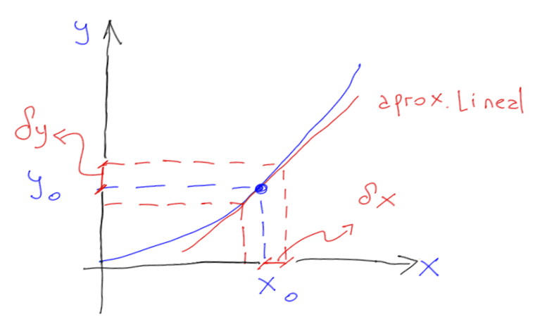

Definiciones
Definimos un sistema no-lineal con el par \((\boldsymbol{f},\boldsymbol{g})\) de la forma:
\[\begin{split}
\begin{aligned}
\dot{\mathbf{x}}(t) &= \boldsymbol{f}(\mathbf{x}(t),\mathbf{u}(t))\\
\mathbf{y}(t) &= \boldsymbol{g}(\mathbf{x}(t),\mathbf{u}(t))
\end{aligned}
\end{split}\]
esto es la generalización de sistemas SISO vistos con anterioridad.
Punto de equilibrio
El punto de equilibrio de un sistema cualquiera para una dada entrada \(\mathbf{u}_0\) es aquel para el cual el sistema se encuentra en reposo, es decir que
\[\boldsymbol{f}(\mathbf{x}_0, \mathbf{u}_0) = 0\]
Cabe destacar que si el sistema es lineal el puto de equilibrio del sistema será \(\mathbf{x}_0=0; \mathbf{u}_0=0\)
Linealización en variables de estado (Jacobiano)
Por definición sea el sistema no-lineal \((\boldsymbol{f},\boldsymbol{g})\) y dado \((\mathbf{x}_0,\mathbf{u}_0)\) un el punto de equilibrio del sistema. La linealización del sistema en \((\mathbf{x}_0, \mathbf{u}_0)\) es el sistema lineal:
\[\begin{split}
\begin{split}
A & = \frac{\partial \boldsymbol{f}(\mathbf{x}, \mathbf{u})}{\partial \mathbf{x}}=\begin{bmatrix}
\frac{\partial f_1}{\partial x_1} & \cdots & \frac{\partial f_1}{\partial x_n} \\
\vdots & & \vdots \\
\frac{\partial f_n}{\partial x_1} & \cdots & \frac{\partial f_n}{\partial x_n} \end{bmatrix}\\
B & = \frac{\partial \boldsymbol{f}(\mathbf{x}, \mathbf{u})}{\partial \mathbf{u}} = \begin{bmatrix}
\frac{\partial f_1}{\partial u_1} & \cdots & \frac{\partial f_1}{\partial u_m} \\
\vdots & & \vdots \\
\frac{\partial f_n}{\partial u_1} & \cdots & \frac{\partial f_n}{\partial x_m} \end{bmatrix}\\
C & = \frac{\partial \boldsymbol{g}(\mathbf{x}, \mathbf{u})}{\partial \mathbf{x}} = \begin{bmatrix}
\frac{\partial g_1}{\partial x_1} & \cdots & \frac{\partial g_1}{\partial x_n} \\
\vdots & & \vdots \\
\frac{\partial g_n}{\partial x_1} & \cdots & \frac{\partial g_n}{\partial x_n} \end{bmatrix}\\
D & = \frac{\partial \boldsymbol{g(\mathbf{x}, \mathbf{u})}}{\partial \mathbf{u}} = \begin{bmatrix}
\frac{\partial g_1}{\partial u_1} & \cdots & \frac{\partial g_1}{\partial u_m} \\
\vdots & & \vdots \\
\frac{\partial g_p}{\partial u_1} & \cdots & \frac{\partial g_p}{\partial u_m} \end{bmatrix}\\
\end{split}
\end{split}\]
Donde todas las derivadas parciales son evaluadas en el punto \((\mathbf{x}_0, \mathbf{u}_0)\).
Linealización por expansión polinomial en series de Taylor
si tenemos que \(y=f(x)\) una función con una única variable \(x\) y \((x_0,u_0)\) es un punto de equilibro del sistema, entonces la expansión de Taylor de la función \(y\) será:
\[
y=f(x_0)+ \frac{df}{dx}\bigg\rvert_{x=x_0} (x-x_0)+\underbrace{ \frac{1}{2\,!}\frac{d^2f}{dx^2}\bigg\rvert_{x=x_0} (x-x_0)^2+ \dots}_{\mbox{despreciando los términos no lineales}}
\]

Considerando pequeñas variaciones en las proximidades del punto de equilibrio, es decir, \(\delta x = x - x_0\) se producirán pequeñas variaciones en la salida, de la forma \(\delta y=y-y_0\), donde \(y_0=f(x_0)\) tendremos:
\[
\begin{matrix}
y = y_0 + \frac{df}{dx}\bigg\rvert_{x=x_0} (x-x_0) & \Longrightarrow & \delta y = \frac{df}{dx}\bigg\rvert_{x=x_0} \delta x
\end{matrix}
\]
Lo anterior se puede ampliar para el caso de 2 variables de la siguiente manera
\(y=f(x_1,x_2)\), con \((x_{10},x_{20},u_0)\) como un punto de equilibrio para el sistema, entonces tendremos que la aproximación por Taylor será:
\[
y \simeq f(x_{10},x_{20})+ \frac{df(x_{1},x_{2})}{dx_{1}}\bigg\rvert_{x=(x_{10},x_{20})} (x_1-x_{10})+\frac{df(x_{1},x_{2})}{dx_{2}}\bigg\rvert_{x=(x_{10},x_{20})} (x_2-x_{20})
\]
Ejemplo: sistema masa-resorte-amortiguador
Partiendo de la ecuación del sistema no lineal, haremos una aproximación por Taylor
\[\begin{split}
\ddot x = \frac{1}{m} F+ g - \frac{b}{m} \dot x - \frac{k}{m}x^3\\
y =h (\dot x, x, F)
\end{split}\]
en el punto de equilibrio:
\[
\begin{matrix}
\dot x = \ddot{x}=0 & \Longrightarrow & (\dot{x_0},x_0, F_0)
\end{matrix}
\]
entonces
\[
y=y_0+ \frac{dh}{dF}\bigg\rvert_{(\dot{x_0},x_0,F_0)} \delta F+\frac{dh}{d\dot x}\bigg\rvert_{(\dot{x_0},x_0,F_0)} \delta \dot x
\]
\[
\delta y = y-y_0 = \frac{1}{m} \delta F+\left(\frac{-3k{x_0}^2}{m}\right) \delta x +\left(\frac{-b}{m}\right)\delta \dot x
\]
luego, como \(\delta y=\delta\ddot{x}\) la ecuación linealizada es
\[
\delta \ddot x = \frac{1}{m} \delta F-\frac{3k{x_0}^2}{m} \delta x-\frac{b}{m} \delta \dot x
\]